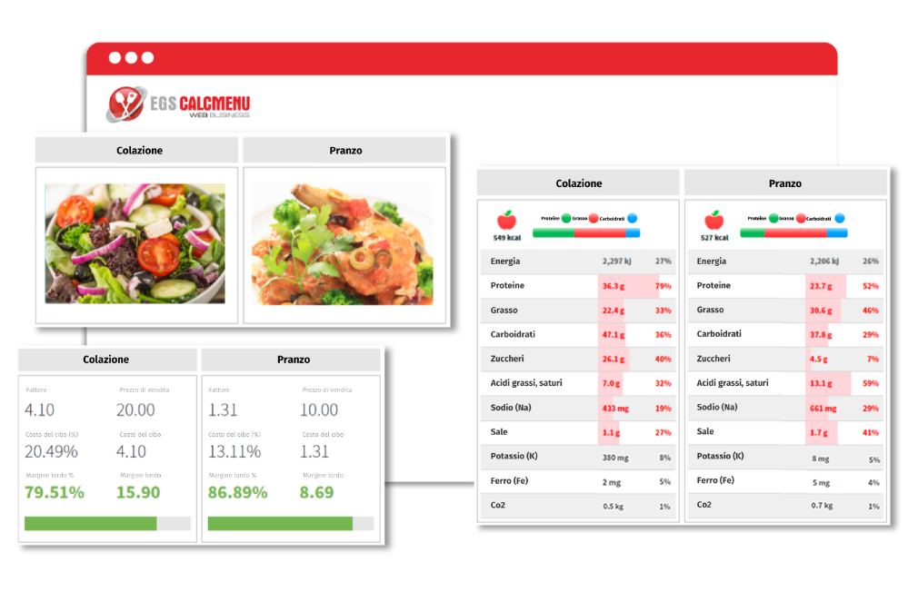

Modernizzare il sistema di gestione della cucina
Gli chef, i proprietari di ristoranti e i professionisti della ristorazione che gestiscono le ricette e pianificano i menu sanno che si tratta di un processo che richiede molto tempo, ma è un fattore cruciale per il successo della loro attività.
Con la tecnologia in prima linea nella crescita aziendale, molti ristoranti, hotel e catering si rivolgono a soluzioni software per automatizzare le attività amministrative quotidiane, aumentare l'efficienza dei processi di produzione del cibo e raggiungere la soddisfazione generale degli ospiti.
Se opera nel settore alberghiero, del catering o della ristorazione, possiamo aiutarla a integrare e digitalizzare diverse parti dei suoi flussi di lavoro per eliminare le inefficienze legate ai processi, in modo da poter gestire la sua cucina in modo efficiente e migliorare le sue operazioni commerciali.

CAMBIARE IL MODO DI GESTIRE RICETTE E MENU
Non avete tempo libero per gestire manualmente le vostre ricette per ottenere coerenza e qualità? Vi chiedete come determinare i migliori prezzi di vendita dei vostri prodotti alimentari per ottenere il successo? Cercate di trovare un modo per ridurre gli sprechi alimentari e praticare la sostenibilità?
Abbiamo esattamente quello che vi serve. EGS CALCMENU Web è un software avanzato di gestione delle ricette basato sul web, progettato per la vostra cucina commerciale. Siamo specializzati nel modernizzare il modo di gestire le ricette per aiutarvi a standardizzare le ricette, ottenere la coerenza delle ricette, determinare l'analisi nutrizionale, garantire le misure di sicurezza alimentare e semplificare la pianificazione dei menu, solo per citarne alcuni.
EGS CALCMENU Web vi fornisce gli strumenti giusti per integrare e digitalizzare diverse parti del vostro flusso di lavoro per eliminare le inefficienze legate ai processi. La nostra cucina centrale e i modelli di business multi-filiale o multi-sede, vi danno la possibilità di standardizzare le ricette e i dati relativi alla merce per garantire una qualità costante, controllando al contempo i costi, creare menu e piani di menu redditizi, ridurre gli sprechi alimentari, creare etichette alimentari in conformità con le leggi alimentari governative e molto altro ancora, per ottenere una gestione efficiente della cucina.
Le aziende come la vostra possono centralizzare la gestione delle ricette su un unico server, pur mantenendo le esigenze specifiche di ogni filiale, sede o quello che noi chiamiamo "sito", nel caso in cui abbiate bisogno di più di un sito. I siti situati in località geografiche diverse possono utilizzare e seguire le procedure, le porzioni e la presentazione standard per tutti gli alimenti preparati.
LAVORARE MEGLIO, PIÙ VELOCEMENTE E IN MODO PIÙ INTELLIGENTE.
Il nostro sistema intelligente di gestione delle ricette, EGS CALCMENU Web, presenta quattro moduli principali:
Merce
Il nostro modulo merceologico è il luogo in cui troverete tutti gli ingredienti da utilizzare. Potete creare e gestire tutte le vostre materie prime definendo la merce per nome, numero, categoria, numero illimitato di parole chiave, prezzo in diverse unità, fornitore, percentuali di spreco e aliquota fiscale.
È inoltre possibile aggiungere alla merce immagini, valori nutritivi e altre informazioni supplementari.
Ricetta
Questo modulo consente di creare nuove ricette, trovare ricette, visualizzare, modificare e salvare le ricette preferite.
-
Gestione Ricette
Una ricetta contiene i seguenti dettagli: nome della ricetta, numero illimitato di parole chiave, osservazioni, categoria, resa flessibile, unità di misura (porzioni, litri, kg, pezzi), fattore di ricarico (costante, profitto lordo o percentuale di food cost), procedure, data dell'ultimo aggiornamento, aliquota fiscale, prezzo imposto, fonte della ricetta, HACCP e altre informazioni supplementari.
È possibile cercare facilmente le ricette utilizzando parole chiave e altri filtri. Le ricette possono anche essere utilizzate come sotto-ricette in altre ricette.
Avete bisogno di ricette stampate? Vi forniamo vari modelli e formati tra cui scegliere, oppure richiedete un modello personalizzato* per soddisfare le vostre esigenze specifiche.
-
Costi della Ricetta
Dite addio al calcolo manuale dei costi del cibo.
Potete facilmente ridimensionare la ricetta (cambiando la quantità di prodotto) e il nostro software calcola automaticamente il costo totale della preparazione. Inoltre, ogni volta che un ingrediente viene aggiunto o rimosso da una ricetta, i costi della ricetta vengono ricalcolati automaticamente.
Inoltre, è possibile visualizzare il prezzo di vendita suggerito automaticamente in base al food cost mirato o al margine di profitto predefinito.
Menù
Selezionate e aggiungete le ricette scelte per creare i vostri menu - utilizzate questo modulo per gestire efficacemente i vostri menu e determinare le vendite e l'analisi dei costi.
-
Semplificate il processo di condivisione delle informazioni e di promozione delle vostre offerte con i clienti. Create eMenu visivamente accattivanti utilizzando i nostri modelli e condividete i vostri piatti del giorno o i menu degli eventi per i banchetti.
Caricate facilmente i menu selezionati con design e layout già pronti, oppure richiedete un modello personalizzato* per soddisfare le vostre esigenze specifiche.
Piano del Menu
Questo modulo consente di organizzare in anticipo i menu per ogni data o occasione, di pianificare le specialità del giorno, di condividere i menu con altri, di determinare il costo totale dei menu e di generare liste della spesa con tutti gli ingredienti del piano dei menu per facilitare gli acquisti.
Ottimizzate i vostri margini di profitto grazie al Menu Forecasting. Determinate i vostri record di produzione, i requisiti di forza lavoro e le decisioni di allocazione e programmazione valutando le stime della domanda di menu.
-
Visualizzazione del Piano dei Menu
Una delle nostre funzioni avanzate, Visualizzazione del piano di menu**, consente di accedere a tutti i dati rilevanti e di visualizzare i contenuti in tempo reale per aiutarvi a pianificare il pasto perfetto e ben bilanciato con velocità e facilità.
Vi facilitiamo la pianificazione dei menu grazie alle nostre visualizzazioni interattive che includono viste per gli allergeni, le parole chiave, i nutrienti, il tempo, i prezzi, la salubrità e la sostenibilità, le foto e le regole del piano dei menu.
PIÙ DI UNA SOLUZIONE PER LA GESTIONE DELLA CUCINA
Nel tentativo di offrire sempre la migliore esperienza agli ospiti, la gestione del tempo e la preparazione dei cibi sono componenti fondamentali di un ristorante o di una cucina commerciale ben gestita.
Le nostre soluzioni forniscono gli strumenti adeguati per consentire ai cuochi e al personale di cucina di ottenere risultati migliori in questo ambiente frenetico. Il capo cuoco, i sous chef, i cuochi di preparazione, i cuochi di linea, il direttore di cucina e il resto del personale di cucina devono essere costantemente allineati per far sì che le operazioni di back-of-house si svolgano senza intoppi.
CHIOSCO PER CALCMENU
Il Kiosk per CALCMENU viene fornito gratuitamente con la licenza EGS CALCMENU Web. È un'applicazione leggera per il personale di cucina che deve visualizzare, condividere o ridimensionare le ricette. È inoltre possibile utilizzare il Kiosk per CALCMENU per creare liste della spesa e stampare etichette.
È possibile accedere al Kiosk for CALCMENU online in qualsiasi momento e ovunque, dai propri dispositivi mobili e tablet.
EGS F&B CONTROL
EGS F&B Control è un sistema completo di back-of-house progettato specificamente per l'industria dell'ospitalità per aiutare le aziende a ridurre i costi del cibo, massimizzare l'efficienza aziendale e aumentare la redditività. Ottimizzando la gestione dell'inventario, le vendite e i rapporti sulle variazioni dei costi alimentari, EGS F&B Control vi offre il controllo totale della vostra attività.
LA VOSTRA RICETTA PER IL SUCCESSO
Le aziende operano su modelli diversi e non esiste più una soluzione unica che soddisfi le esigenze uniche di ogni azienda.
Per questo motivo, abbiamo creato servizi personalizzati come complemento perfetto del nostro software di gestione delle ricette per soddisfare le vostre esigenze specifiche.

SERVIZIO DI GESTIONE AVANZATA DEI DATI (ADMS)*
Eliminiamo il noioso compito dell'inserimento manuale dei dati. Risparmiate tempo e denaro lasciando che i nostri esperti di dati codifichino i vostri dati in EGS CALCMENU Web, utilizzando solo le migliori pratiche e strategie del settore, avvalendosi del nostro servizio di gestione avanzata dei dati (ADMS).
Con ADMS, gli ingredienti e le procedure delle vostre ricette sono standardizzati, gli errori sono ridotti al minimo e vengono fornite informazioni accurate sulle ricette in più lingue per voi e per il vostro personale di cucina.
*Può essere soggetto a costi aggiuntivi.

Revisione dei processi aziendali (BPR)*
La crescente concorrenza nel settore significa che le aziende come la vostra devono continuamente impegnarsi per implementare le migliori pratiche e tenersi aggiornate con le ultime innovazioni del settore.
Possiamo assistervi attraverso i nostri vari servizi di consulenza per trovare le migliori soluzioni software possibili e implementare nuove tecnologie per ottimizzare il vostro quadro operativo.
*Può essere soggetto a costi aggiuntivi.

INTEGRAZIONE DI SISTEMA E INTERFACCE*
Possiamo integrarci con un sito web specifico o con diversi siti web per consentirvi di accedere ai dati in remoto con l'obiettivo di fornire contenuti a questi siti.
Le nostre soluzioni possono anche essere collegate a qualsiasi ERP, SAP, sistemi di fornitori o altre soluzioni software. L'interfaccia gestisce il collegamento e l'integrazione dei dati nel nostro software di gestione delle ricette.
*Può essere soggetto a costi aggiuntivi.

FORMAZIONE DEGLI UTENTI
Quando si implementa un nuovo sistema di gestione delle ricette, investire nella formazione è una scelta saggia. Ciò contribuisce al successo della migrazione e garantisce che tutti gli utenti abbiano familiarità con l'uso degli strumenti a loro vantaggio.
Raggiungete la massima efficienza e programmate oggi stesso ulteriori programmi online con i nostri esperti in materia.
*Può essere soggetto a costi aggiuntivi.
EGS CALCMENU Web è ricco di funzioni intelligenti progettate per facilitare il lavoro nella vostra cucina professionale. Scoprite come le nostre soluzioni e i nostri servizi avanzati si adattano alle vostre esigenze aziendali.
Abbiamo inoltre applicato i migliori sistemi con i più alti parametri di riferimento in termini di sicurezza, prestazioni e affidabilità.
*Soggetto a costi aggiuntivi.